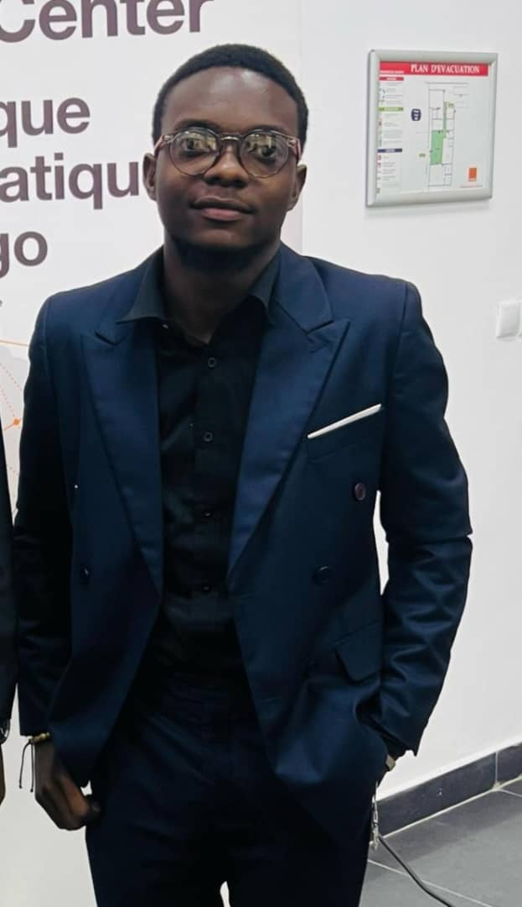

About Me
Hello! I’m Ben Diya, a frontend developer passionate about building clean, accessible, and user-focused web interfaces.
My journey into web development began in 2020 through hands-on experimentation with HTML and CSS. Since then, I’ve been focused on crafting responsive, performant, and visually engaging web experiences.
I enjoy transforming ideas and designs into functional interfaces, paying close attention to usability, accessibility, and consistency across devices.
- JavaScript (ES6+)
- TypeScript
- Python
- HTML5
- CSS3 / Tailwind
- Responsive Design
- Accessibility (a11y)
- Git & GitHub

[ Your Profile Picture ]